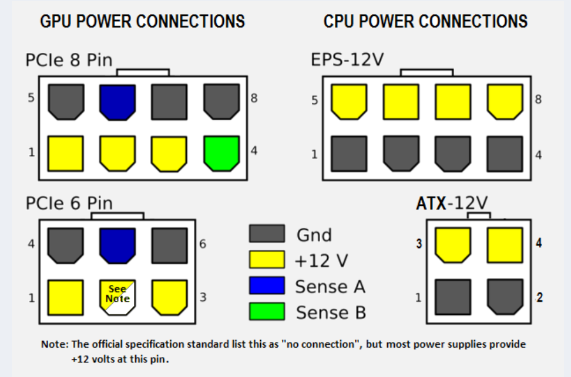
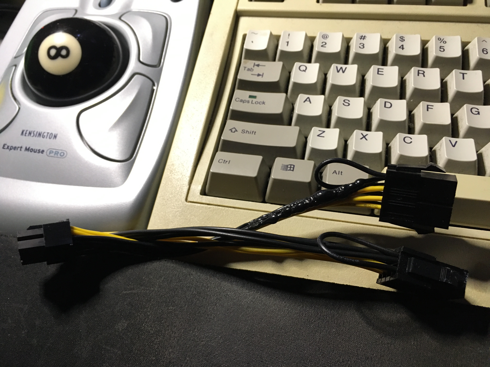
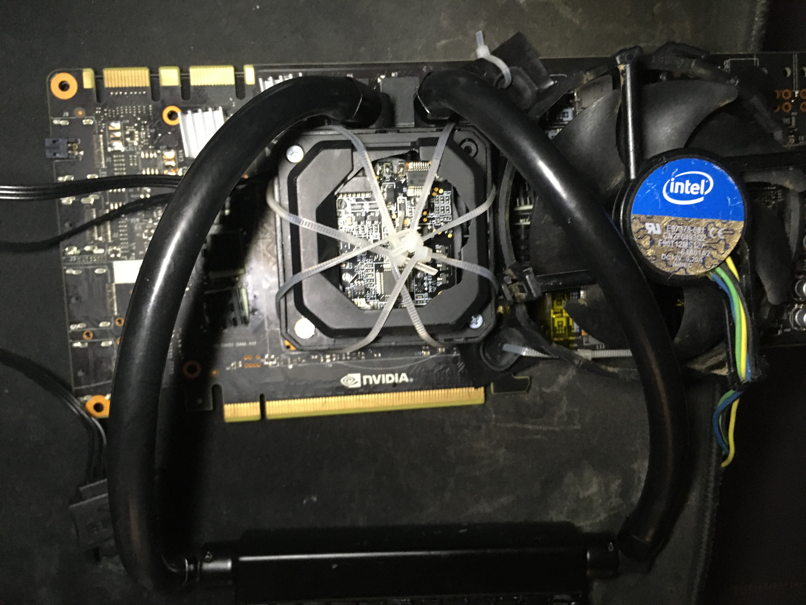
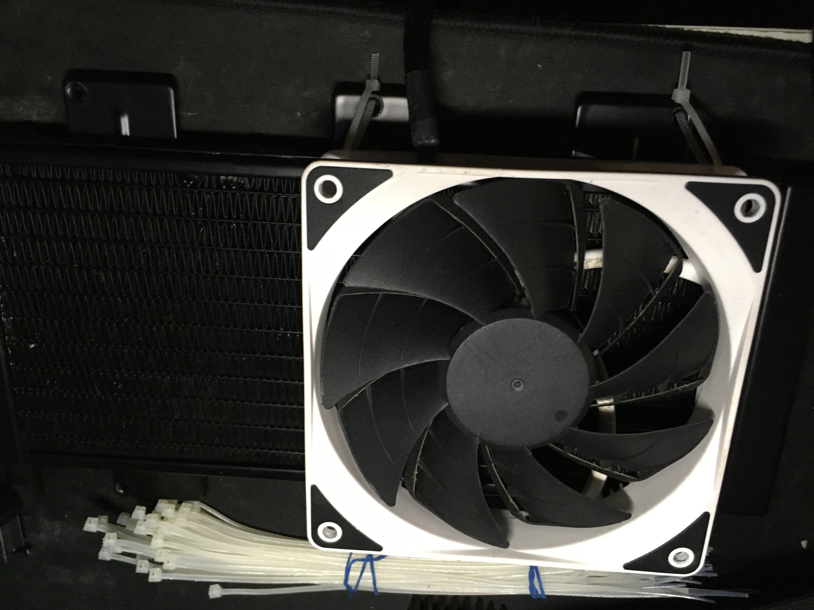
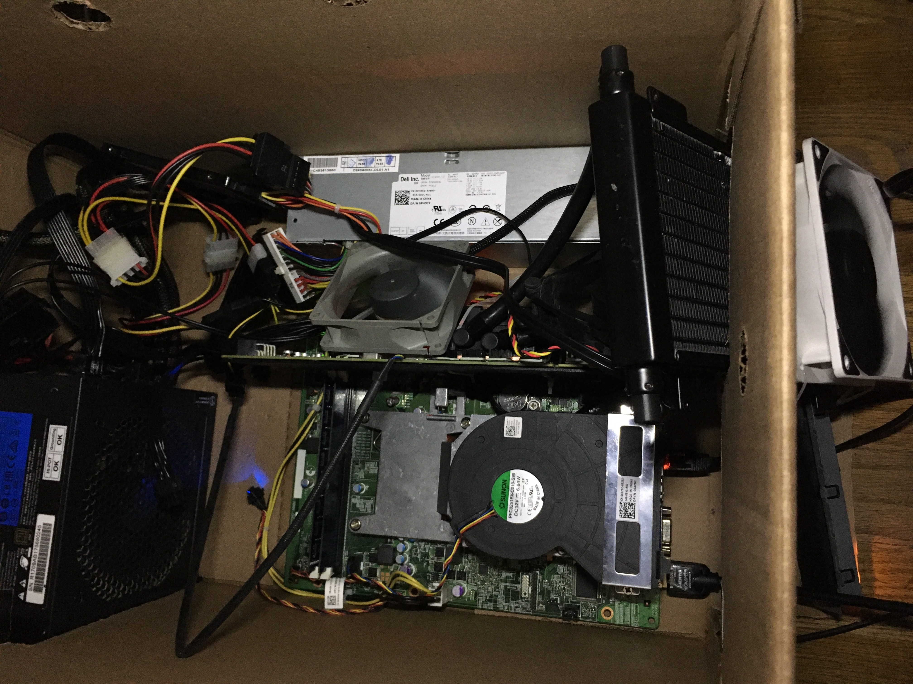

Old Stories
The computer hardware used to be more playful and worth tinkering. My favorate platfom from a decade ago, Sandy Bridge on LGA 1155, can still be powerful even today.
Back in the days, I used to repair people’s electronics for free. Because of that, I also received a lots of spares and e-waste in exchange. One of the best was a LGA 1155 motherboard with i5-2300 on it. Then, I bought a cheap E3-1245 and GTX 750 Ti to make it a gaming rig. I played a lot of games on that, such as Dark Souls series and Metro series. Before it was sold, last games I played on this build was Metro Exodus and Elden Ring.
Sandy Bridge was the last generation using soldered integrated heat spreader (IHS) in a long time. It’s cooler and stays cool over time way better than its thermal-pasted successors (e.g. Haswell/Hotwell). Back then, there was a doggerel joking about AMD’s performance and Intel’s temperature, saying “Unlocking AMD, Delidding Intel.”
The real fun project was a LGA771 to LGA775 Mod on a Dell Vostro 220s. It was a hardware hack that letting this low-end Vostro uses a dirt cheap yet powerful Xeon. The motherboard also has 4 SATA ports so it works well as a NAS.
Next is our today’s topic, Dell Optiplex 3010 SFF. It was on sell for quite a few months but seemingly no one wants it at all. I don’t think it’s a completely garbage comparing the Vostro above. It came with an i3-3220 but has been upgraded to the i5-2300 that was replaced from the gaming rig for the sake of LGA 1155. I’m not planning to put an Xeon E3 on it but a weird graphic card without output port.
Philosophy
If you’re wondering—why bother spending such amount of time and effort tinkering those e-wastes? Just because of being a cheapskate and saving money?
Here is the answer from my previous post:
I really like the idea from cheapskatesguide and lowtechmagazine that could save people from the pitfalls of consumerism. Moreover, to me it’s not about saving money on technology nor adapting certain lifestyles. This is a manifestation of ideology, the way of pursuing freedom.
By this chance, I would like to add more details on that.
On the internet, proprietary software isn’t the only way to lose your freedom. Service as a Software Substitute, or SaaSS, is another way to let someone else have power over your computing.
If you use SaaSS, the server operator controls your computing. It requires entrusting all the pertinent data to the server operator, which will be forced to show it to the state as well—who does that server really serve, after all?
SaaSS does not require covert code to obtain the user’s data. Instead, users must send their data to the server in order to use it. This has the same effect as spyware: the server operator gets the data—with no special effort, by the nature of SaaSS.
With SaaSS, the server operator can change the software in use on the server. He ought to be able to do this, since it’s his computer; but the result is the same as using a proprietary application program with a universal back door: someone has the power to silently impose changes in how the user’s computing gets done.
Thus, SaaSS is equivalent to running proprietary software with spyware and a universal back door. It gives the server operator unjust power over the user, and that power is something we must resist.
SaaSS always subjects you to the power of the server operator, and the only remedy is, Don’t use SaaSS! Don’t use someone else’s server to do your own computing on data provided by you.
These are selected from Free Software, Free Society and I recommend to read the whole book if you have not already.
RMS was right, once again. SaaS is dangerous to human liberty and I was aware of it. Since it was called “the cloud”, I’ve been self-hosting and peer-to-peer everything back that time.
Nowadays, it’s called “Generative AI”. This is why the first chapter of my Stable Diffusion article called “No DALL-E, No Midjourney and No Colab” where talks about neutrality and transparency. AIaaS leaks data and not secure. Not only ChatGPT can become BadGPT, but also open-source LLM can become PoisonGPT. Just like Diffusion models can have malware. Never blindly trust something just because it’s open-source.
Hardware
Note: This is rather a rough record than a proper guide. Keep in mind, be sure you have enough experience tinkering PC hardware. Proceed with caution and at your own risk.
During the summer, I was working on my research paper and now I have some time back to this fun project.
Although I had some fun and had done quite some projects with it, the biggest con about My mini Server is the VRAM capacity. 4GB is too limiting when I attempt to do training, like LoRA models. Not only that, even using ControlNet or running Open LLM are too restrained. So I decide to buy a NVIDIA Tesla M40, with 24 GB of VRAM which is the largest amount I can get from a cheap single card.
Money on the parts ($180-250 in total) :
- Dell Optiplex (Sandy Bridge), $0
- In my case it’s 3010 SFF but other models (7010/9010) would be better
- On Ebay $40 for whole unit, $20 for motherboard only
- These models apears in surplus or thrift store quite often
- With the BIOS hack, neither
Above 4G Decoding,Resizable BARnorpci=reallocare needed
- NVIDIA Tesla M40 24 GB, $110
- Corsair AIO Cooler, $25
- It’s the cheapest I can find, unknown model
- The condition is working but looks pretty much AS-IS
- I refilled it with purified water, checked the seal and pressure tested the pump
- No mounting bracket and I don’t need it either
- The screw holes on M40 is 58 x 58 mm, the smaller cooler surface the better (need space to put small heatsinks on VRAM chips)
- A $17 NZXT Kraken G12 is the proper way to go, but those compatible coolers can be expensive even buying used
- Most CPU AIO coolers would do it though, if using zip tie method
- Regular CPU air coolers may be too heavy for our card, and the blower fan adapter method is loud, ineffecient yet not cheap
- Seasonic SSR-550RM, $28
- Just a little bit overkill but it’s a good deal
- CPU 8 Pin EPS Cable for Seasonic Modular PSU, $10
- Dual PSU Adapter, $9
- Optional, bought it for convenience
- 1TB SATA SSD, $0
- Optional, possible to hack in NVMe drives for larger form like 7010/9010
GPU Selection
Depending on price, availability and capacity, only K80, M40 and P40 are in my options.
7xx(Kepler)：Tesla K80 24G
9xx(Maxwell)：Tesla M40 12G/24G，Tesla M4 4G
10x0(Pascal)：Tesla P100 16G，Tesla P40 24G，Tesla P4 8G
20x0(Volta/Turing)：Tesla T4 16G，Tesla V100 16G/32G
30x0(Ampere)：NVIDIA A100 40/80GB，NVIDIA A40 48GB，NVIDIA RTX A6000 48G
The best bang for the budget seems like the old good K80, but it isn’t. The driver for Kepler cards are stucked with 440.95.01 and CUDA Toolkit 11.4. Besides that, K80 24G version is actually two 12G versions so it may only recognize half of the VRAM in some application.
The problem with Pascal card is that costs more money but not worth it. The support of quantization matters when it comes to AI inference. However, in order to get the performance gain from utilizing quantization. We are not only need to have the supported hardware and use the correct model, but the software needs to support it as well. Eventhough P100 supports FP16 and P40 supports INT8, they are not well supported by the upstream.
Therefore, if using INT8 or FP16 is not expected, because most of the time it runs with FP32, no reason to spend more on P100 and P40. M40 is the sweet spot without doubt, and it saves a lot of hassle on optimazation. All in all, M40 is great for non-production evironment where performance isn’t the priority.
About Power Supply
 Because there is only a 4+4 pin CPU power cable on my 550w PSU and Tesla cards require CPU’s EPS connection. I bought a $7 spliting PCIe to EPS adapter. Sadly, it melt within minutes.

It’s very likely that the melting was caused by the copper in the cable was too thin or the resistance of the cable was too high. To power the 250w GPU, a thicker stronger cable is required.
I think it’s possible to force the 4+4 pin male connector fit into the 8 pin female socket on the GPU by filing it, but didn’t try. Finally, I bought a dedicated modular cable instead of another adapter. It says “UL1007 18AWG tinned copper wire with high current terminal” that sounds strong enough for the task and it indeed does.
The dual PSU adapter is more convenient than a switch jumper cable and safer than a paper clip.
Thermal MOD (Zip-tie Method)


When hardware is incompatible, zip tie is our best friend.
I have talked a lot on the cooling system already. Here just a showcase for my zip tie method mounting any sized AIO cooler, case fan and heat sink.
It is quite stable and low-noise. Works on both CPU and GPU. As a bounus, the zip ties also hold up the GPU backplate quite well, and the water pipes can support the GPU to balance its weight if tweaked to a good angle. So, nothing will come loose or bend in a long run.

In my CASE, the cardboard box, the cooling is a bit overkill and I’m quite happy about 23-26C idle and 46-52C full-load temperature.
Very cool temperature on idle:
+---------------------------------------------------------------------------------------+
| NVIDIA-SMI 535.104.05 Driver Version: 535.104.05 CUDA Version: 12.2 |
|-----------------------------------------+----------------------+----------------------+
| GPU Name Persistence-M | Bus-Id Disp.A | Volatile Uncorr. ECC |
| Fan Temp Perf Pwr:Usage/Cap | Memory-Usage | GPU-Util Compute M. |
| | | MIG M. |
|=========================================+======================+======================|
| 0 Tesla M40 24GB On | 00000000:01:00.0 Off | 0 |
| N/A 24C P8 18W / 250W | 0MiB / 23040MiB | 0% Default |
| | | N/A |
+-----------------------------------------+----------------------+----------------------+
+---------------------------------------------------------------------------------------+
| Processes: |
| GPU GI CI PID Type Process name GPU Memory |
| ID ID Usage |
|=======================================================================================|
| No running processes found |
+---------------------------------------------------------------------------------------+
Full-load running Llama2:
+---------------------------------------------------------------------------------------+
| NVIDIA-SMI 535.104.05 Driver Version: 535.104.05 CUDA Version: 12.2 |
|-----------------------------------------+----------------------+----------------------+
| GPU Name Persistence-M | Bus-Id Disp.A | Volatile Uncorr. ECC |
| Fan Temp Perf Pwr:Usage/Cap | Memory-Usage | GPU-Util Compute M. |
| | | MIG M. |
|=========================================+======================+======================|
| 0 Tesla M40 24GB On | 00000000:01:00.0 Off | 0 |
| N/A 52C P0 250W / 250W | 16777MiB / 23040MiB | 100% Default |
| | | N/A |
+-----------------------------------------+----------------------+----------------------+
+---------------------------------------------------------------------------------------+
| Processes: |
| GPU GI CI PID Type Process name GPU Memory |
| ID ID Usage |
|=======================================================================================|
| 0 N/A N/A 351272 C python3 16774MiB |
+---------------------------------------------------------------------------------------+
Firmware
The report of 7010 is very brief, so I decide to extend it a little bit based on my 3010 reimplementation.
First off follow this NVME guide to dump the BIOS rom.
On my 3010, the jumper needs to remove CPU cooler(take the entire cooler with the fan) to find.

According to Dell official 2-3 pin: normal default; 1-2 pin: clear ME(service mode) to move the jumper. It is actually MECLR1 on my board (right side of the photo).
After updated my BIOS version from A09 to A20, I made a backup using fptw64.exe -d backup.bin.
Next, follow this DSDT guide but during step 5, after finishing the changes, add some more extra changes from this issue:
- Change
If (((MM64 == Zero) || (OSYS <= 0x07D3)))toIf (((OSYS <= 0x07D3))) - Change
ElseIf (E4GM)toElse - Remove this section
Else
{
CreateDWordField (BUF0, \_SB.PCI0._Y0F._LEN, M4LN) // _LEN: Length
M4LN = Zero
}
Continue rest of the steps to finish the DSDT mod, then proceed with UEFI Patch guide to get the patched version of the mod rom.
Finally, use fptw64.exe -bios -f modpatched.bin to flash the rom.
Files
I have share all files generated during the process in this repo.
A20MOD.rom.patched.bin is the binary file named modpatched.bin in the final step above. The souce code is in DSDTMod.dsl.
Software
Debian
The system is installed with debian-11.6.0-amd64-netinst.iso
neofetch
_,met$$$$$gg. root
,g$$$$$$$$$$$$$$$P. ---------
,g$$P" """Y$$.". OS: Debian GNU/Linux 11 (bullseye) x86_64
,$$P' `$$$. Host: OptiPlex 3010 01
',$$P ,ggs. `$$b: Kernel: 5.10.0-25-amd64
`d$$' ,$P"' . $$$ Uptime: 6 mins
$$P d$' , $$P Packages: 566 (dpkg)
$$: $$. - ,d$$' Shell: bash 5.1.4
$$; Y$b._ _,d$P' Resolution: 1280x800
Y$$. `.`"Y$$$$P"' CPU: Intel i5-2300 (4) @ 2.800GHz
`$$b "-.__ GPU: Intel 2nd Generation Core Processor Family
`Y$$ GPU: NVIDIA Tesla M40
`Y$$. Memory: 160MiB / 5828MiB
`$$b.
`Y$$b.
`"Y$b._
`"""
swap
A large swap partition is recommended. But it’s possible to add a secondary swap file alongside with swap partition to load RAM hungry models in any time. The advantage of swap file is that this is rather a temporary and flexible solution than a permanent fixed partition.
fallocate -l 64G /home/swapfile
chmod 600 /home/swapfile
mkswap /home/swapfile
swapon /home/swapfile
nano /etc/fstab
UUID=xxxxx-xxx swap swap defaults,pri=100 0 0
/home/swapfile swap swap defaults,pri=10 0 0
Check with swapon --show and free -h
cuda
Disable Nouveau driver
bash -c "echo blacklist nouveau > /etc/modprobe.d/blacklist-nvidia-nouveau.conf"
bash -c "echo options nouveau modeset=0 >> /etc/modprobe.d/blacklist-nvidia-nouveau.conf"
update-initramfs -u
update-grub
reboot
Install dependencies
apt install linux-headers-`uname -r` build-essential libglu1-mesa-dev libx11-dev libxi-dev libxmu-dev gcc software-properties-common sudo git python3 python3-venv pip libgl1 git-lfs -y
(Optional) add sudoer usermod -aG sudo username then reboot
Install Nvidia
wget https://developer.download.nvidia.com/compute/cuda/repos/debian11/x86_64/cuda-keyring_1.1-1_all.deb
dpkg -i cuda-keyring_1.1-1_all.deb
add-apt-repository contrib
apt-get update
apt-get -y install cuda
(Optional) Fix if the keyring doesn’t work automatically
sudo apt-key adv --fetch-keys https://developer.download.nvidia.com/compute/cuda/repos/debian11/x86_64/7fa2af80.pub
sudo bash -c 'echo "deb [signed-by=/usr/share/keyrings/cuda-archive-keyring.gpg] https://developer.download.nvidia.com/compute/cuda/repos/debian11/x86_64/ /" > /etc/apt/sources.list.d/cuda.list'
apt-get update
apt-get -y install cuda
After cuda installed run sudo update-initramfs -u and nano ~/.bashrc
export PATH=/usr/local/cuda-12.2/bin${PATH:+:${PATH}}
export LD_LIBRARY_PATH=/usr/local/cuda-12.2/lib64\
${LD_LIBRARY_PATH:+:${LD_LIBRARY_PATH}}
ldconfig, source ~/.bashrc or reboot then
nvidia-smi, nvcc --version and lspci to verify if everything is working
00:00.0 Host bridge: Intel Corporation 2nd Generation Core Processor Family DRAM Controller (rev 09)
00:01.0 PCI bridge: Intel Corporation Xeon E3-1200/2nd Generation Core Processor Family PCI Express Root Port (rev 09)
00:02.0 VGA compatible controller: Intel Corporation 2nd Generation Core Processor Family Integrated Graphics Controller (rev 09)
00:1a.0 USB controller: Intel Corporation 6 Series/C200 Series Chipset Family USB Enhanced Host Controller #2 (rev 04)
00:1b.0 Audio device: Intel Corporation 6 Series/C200 Series Chipset Family High Definition Audio Controller (rev 04)
00:1c.0 PCI bridge: Intel Corporation 6 Series/C200 Series Chipset Family PCI Express Root Port 1 (rev b4)
00:1c.4 PCI bridge: Intel Corporation 6 Series/C200 Series Chipset Family PCI Express Root Port 5 (rev b4)
00:1d.0 USB controller: Intel Corporation 6 Series/C200 Series Chipset Family USB Enhanced Host Controller #1 (rev 04)
00:1f.0 ISA bridge: Intel Corporation H61 Express Chipset LPC Controller (rev 04)
00:1f.2 SATA controller: Intel Corporation 6 Series/C200 Series Chipset Family 6 port Desktop SATA AHCI Controller (rev 04)
00:1f.3 SMBus: Intel Corporation 6 Series/C200 Series Chipset Family SMBus Controller (rev 04)
03:00.0 Ethernet controller: Realtek Semiconductor Co., Ltd. RTL8111/8168/8411 PCI Express Gigabit Ethernet Controller (rev 06)
01:00.0 3D controller: NVIDIA Corporation GM200GL [Tesla M40] (rev a1)
Subsystem: NVIDIA Corporation GM200GL [Tesla M40]
Flags: bus master, fast devsel, latency 0, IRQ 16
Memory at f1000000 (32-bit, non-prefetchable) [size=16M]
Memory at 800000000 (64-bit, prefetchable) [size=32G]
Memory at 400000000 (64-bit, prefetchable) [size=32M]
Capabilities: [60] Power Management version 3
Capabilities: [68] MSI: Enable- Count=1/1 Maskable- 64bit+
Capabilities: [78] Express Endpoint, MSI 00
Capabilities: [100] Virtual Channel
Capabilities: [258] L1 PM Substates
Capabilities: [128] Power Budgeting <?>
Capabilities: [420] Advanced Error Reporting
Capabilities: [600] Vendor Specific Information: ID=0001 Rev=1 Len=024 <?>
Kernel driver in use: nvidia
Kernel modules: nouveau, nvidia_drm, nvidia
With the BIOS Mod, neither Above 4G Decoding nor pci=realloc is needed.
As memtioned, this mod is only for Linux. Under Windows, the GPU still gets Error code 12. It’s possible to virtualize Windows as a VM with GPU passthrough, like on Proxmox, but I didn’t try that.
Asuka benchmark runs at 0:25 per asuka and 2.0it/s
Subs AI Whisper
My Wisper server was using Generate-subtitles and it had done a lot of work. However, that project is outdated and now I find Subs AI is better in every way.
Install everything needed
sudo apt install ffmpeg
pip install setuptools-rust
pip install git+https://github.com/abdeladim-s/subsai
subsai-webui
Run subsai-webui --server.maxMessageSize 500 to increase the upload size limit, subsai-webui to start server
(Optional) Add to PATH nano ~/.bashrc then source ~/.bashrc
'/home/aier/.local/bin'
export PATH="$HOME/.cargo/bin:$PATH"
export PATH="$HOME/.local/bin:$PATH"
(Optional) Fixing cudnn issue by sudo apt-get install libcudnn8
Could not load library libcudnn_ops_infer.so.8. Error: libcudnn_ops_infer.so.8: cannot open shared object file: No such file or directory
Please make sure libcudnn_ops_infer.so.8 is in your library path!
Text generation web UI
Since I would like to explore and test out many different LLMs, oobabooga’s Text generation web UI would be a great way to do that.
git clone https://github.com/oobabooga/text-generation-webui.git
cd text-generation-webui
./start_linux.sh
nano CMD_FLAGS.txt to make it online with flags --listen --listen-host 0.0.0.0 --listen-port 7860
Check Hugging Face’s Leaderboard
OpenCompass’s Leaderboard
For beginers: Free Open-Source AI LLM Guide (Summer 2023)
API
Install requirements from ~/text-generation-webui/extensions/api
pip install -r requirements.txt
Edit flags nano CMD_FLAGS.txt
--listen --listen-host 0.0.0.0 --listen-port 7860 --api --extensions openai
Optional for OpenedAI API nano extensions/openai/.env
OPENAI_API_KEY=sk-111111111111111111111111111111111111111111111111
OPENAI_API_BASE=http://0.0.0.0:5001/v1
Then start the server as usual, and it would be able to talk to other compatible services.
Llama2 uncensored
Use Llama2 without Meta’s non-sense agreement and censorship.
Go to http://ip:7860 → Switch to Model tab → Under Download model or LoRA → Paste TheBloke/llama2_7b_chat_uncensored-GGUF → llama2_7b_chat_uncensored.Q5_K_M.gguf → Click Get file list then Download
Flags/Parameters for llama.cpp
- Checking
CPUis a must to avoidIllegal instruction n-gpu-layersto maximum128n_ctxlimits the prompt length, costs VRAMthreadsdoes not mattern_batchdoes not matterRoPEoptions are left defaultmul_mat_qspeed up a bitno-mmapcan doom the speed like crawling in hellmlockslow down speed a bit
Flags for Transformers (e.g. bloomz-1b7)
compute_dtypeto float32 is the only change needed
The speed of generation is around 10-15 tokens/s for 7B models and 3-9 tokens/s for 13B modles.
Despite the 7B version of Llama2 (5000+ MB), and M40 can handle large sized 13B models very easily (e.g. wizardlm-1.0-uncensored-llama2-13b.Q5_K_M 11000-14000 MB).
For long context/tokens models, 7b-128k or 13b-64k models are feasible. Allocating n_ctx value wisely to prevent running out of memory.
Convert Models
Due to the compatibility, GPTQ-for-LLaMa and AutoGPTQ doesn’t work well for old cards and sometimes I can only find models with the old GGML model which is obsoleted. Instead of relying on TheBloke, I’d do it myself.
GGML to GGUF
git clone https://github.com/ggerganov/llama.cpp
cd ~/text-generation-webui/models/
wget https://huggingface.co/s3nh/llama2_13b_chat_uncensored-GGML/resolve/main/llama2_13b_chat_uncensored.ggmlv3.q5_0.bin
python3 /home/username/llama.cpp/convert-llama-ggml-to-gguf.py -i llama2_13b_chat_uncensored.ggmlv3.q5_0.bin -o llama2_13b_chat_uncensored.ggmlv3.q5_0.gguf
Llama-2-7B-32K-Instruct
The long context model I choose is togethercomputer/Llama-2-7B-32K-Instruct. It loads by Transformerswith enable use_fast to function normally. TheBloke/Llama-2-7B-32K-Instruct-GGUF doesn’t work for me.
The performance and results is really good:
Output generated in 22.14 seconds (9.53 tokens/s, 211 tokens, context 294)
Output generated in 324.32 seconds (8.53 tokens/s, 2765 tokens, context 66)
mistral-7b-instruct-v0.1.Q5_K_M.gguf
Output generated in 30.74 seconds (12.95 tokens/s, 398 tokens, context 69)
TTS Generation WebUI
Using the recommend installer
wget https://github.com/rsxdalv/one-click-installers-tts/archive/refs/tags/v6.0.zip
sudo chmod +x v6.0.zip
unzip v6.0.zip
cd one-click-installers-tts-6.0
./start_linux.sh
Bark Voice Clone
It can take a while and use the time to prepare a 15-30s voice sample.
When it’s done:
Go to http://ip:7860 → Switch to Bark Voice Clone tab → Upload Input Audio → Click Generate Voice → Click Use as history → Switch to Generation (Bark) tab → Click refresh button → Select the .npz sample inAudio Voice → Click Generate
Now, it’s time to start experimenting temperatures. Save the sample when satisfied.
Note: It will download required files while the first use so watch the output from backend between clicking.
MusicGen
Recent years, there is a emerge of AI generated music videos with obviously SD generated cover image on YouTube. I believe they are made with MusicGen.
So I made a few my own taste of music with prompt Chiptune, KEYGEN, 8bit and that sounds not bad.
h2oGPT
As a researcher, I work with a lot of ebooks and documents on a daily basis. A private offline version of pdfGPT or chatpdf is extremely helpful.
Unfortunately, Text generation web UI is falling far behind for this specific task. By comparison, h2oGPT is by far the most advanced project.
To install:
git clone https://github.com/h2oai/h2ogpt.git
cd h2ogpt
pip install -r requirements.txt
pip install -r reqs_optional/requirements_optional_langchain.txt
pip install -r reqs_optional/requirements_optional_gpt4all.txt
pip install pysqlite3-binary chromadb chroma-hnswlib hnswlib auto_gptq==0.4.2
python3 generate.py
Solution to RuntimeError: Your system has an unsupported version of sqlite3. Chroma requires sqlite3 >= 3.35.0.
Added these 3 lines at the beginning:
nano nano /home/user/.local/lib/python3.9/site-packages/chromadb/__init__.py
__import__('pysqlite3')
import sys
sys.modules['sqlite3'] = sys.modules.pop('pysqlite3')
When it’s done:
Go to http://ip:7860 → Switch to Models tab → Choose Base Model h2oai/h2ogpt-4096-llama2-7b-chat → Click Download/Load Model
Next time, launching with python3 generate.py --base_model=h2oai/h2ogpt-4096-llama2-7b-chat --score_model=None --langchain_mode='UserData' --user_path=user_path
(Optional) Launch in offline mode by python3 generate.py --score_model=None --gradio_size=small --model_lock="[{'base_model': 'h2oai/h2ogpt-4096-llama2-7b-chat'}]" --save_dir=save_fastup_chat --prepare_offline_level=2
Note: Due to instructor-large embedding and increased context length, h2oai/h2ogpt-4096-llama2-13b-chat and other 13B models end up taking more than 26GB VRAM, which is out of M40’s range. So 7B models like h2ogpt-4096-llama2-7b-chat, ehartford/WizardLM-7B-Uncensored or finetuned h2ogpt-oasst1-4096-llama2-7b are more appropriate (costs 14GB VRAM).
Custom Models
h2oGPT web UI provides a large selections of models from huggingface. However, I would like to have some good non-English models in addition.
Note:
- Unlike FAQ indicated, pre-downloading models to local and passing
--model_pathis unnecessary. - Fine-tuned models is more likely to avoid trashy output
- For text translation/interpretation/summary, instruction finetuned models are better than chat finetuned models
- Use
--lora_weights=to load a LoRA,--use_safetensors=Truewhen load safetensors - Long context version is preferred
- Recommend to add
--prompt_typefor custom models following FAQ and this family chart or this evolutionary graph - If no prompt type preset, e.g.
bloomz-7b1-mt, load the model without passing--prompt_type, go toExperttab and experiment prompt type in the web ui - It shares the same directory as other projects for HF model storage at
~/.cache/huggingface/hub/
Non-English Models
Since vanilla Llama2 does not work well responding non-English languages, I have tested a list of Chinese/multilingual LLMs and found some useful result. Others may do the same for their preferred language:
LinkSoul/Chinese-Llama-2-7b+zigge106/LinkSoul-Chinese-Llama-2-7b-200wechat-chatgpt-best: Chats ok but extremely bad performance working with context, with or without LoRA, unable to complete any testTHUDM/chatglm2-6borEcholist-yixuan/chatglm2-6b-qlora: Chats ok but only generates garbage for context, unable to complete any testziqingyang/chinese-alpaca-2-7b+ziqingyang/chinese-alpaca-2-lora-7b: good performance, no good prompt type with or without LoRA, language disturbance, only hallucinates if not generates garbage, typical Artificial Imbecilitybaichuan-inc/Baichuan2-7B-Chat: prompt typemptinstruct,openai_chat,wizard2and etc., good performance, good intelligence but hallucinates, normal accuracyLinly-AI/Chinese-LLaMA-2-7B-hf: prompt typellama2doesn’t work, instead useinstruct,quality,gptjand etc., good performance and okay intelligence, bad accuracyOpenBuddy/openbuddy-openllama-7b-v12-bf16: prompt typeopenai_chat,quality,gptjand etc., good performance, normal intelligence, normal accuracy, recommendFreedomIntelligence/phoenix-inst-chat-7b: prompt typeguanaco,open_assistant,wizard_lmand etc., good performance, normal intelligence, normal accuracy, recommendBelleGroup/BELLE-7B-2M: prompt typeguanaco,instruct,belugaand etc., normal performance, bad intelligence, bad accuracyQwen/Qwen-7B-Chat: prompt typewizard_lm,quality,wizard3and etc., good performance, great intelligence but overly creative, censored, bad accuracy, worth a tryxverse/XVERSE-7B-Chat: prompt typeone_shot,mptinstruct,gptjand etc., normal performance, good intelligence but overly creative, bad accuracy, recommendinternlm/internlm-chat-7b:low performance, no good prompt type, strong language disturbance, resists against language preset, only hallucinates if not generates garbage, typical Artificial ImbecilityPengQu/Llama-2-7b-vicuna-Chinese: Prompt typeinstruct_vicuna,open_assistant,instruct_vicuna2and etc., low performance, good intelligence but creative, hallucinates, normal accuracy, does not avoid violence
The average accuracy is not satisfying probably due to 7B size. Tinkering configurations in Expert tab may help. Further custom training may be required as well.
Modify System/Query/Summary (Pre-)Prompt under Expert tab and Prompt (or Custom) in web ui or passing --prompt_dict accordingly to fit non-English language preference:
System Prompt:用中文回答问题或响应指令Query Pre-Prompt:请注意并记住下面的信息，这将有助于在情境结束后回答问题或遵循命令。Query Prompt:根据上文提供的文档来源中的信息，Summary Pre-Prompt:为了撰写简明扼要的单段或项目符号列表摘要，请注意以下文本Summary Prompt:仅利用上述文档来源中的信息，写一个简明扼要的关键结果总结（最好使用项目符号）：